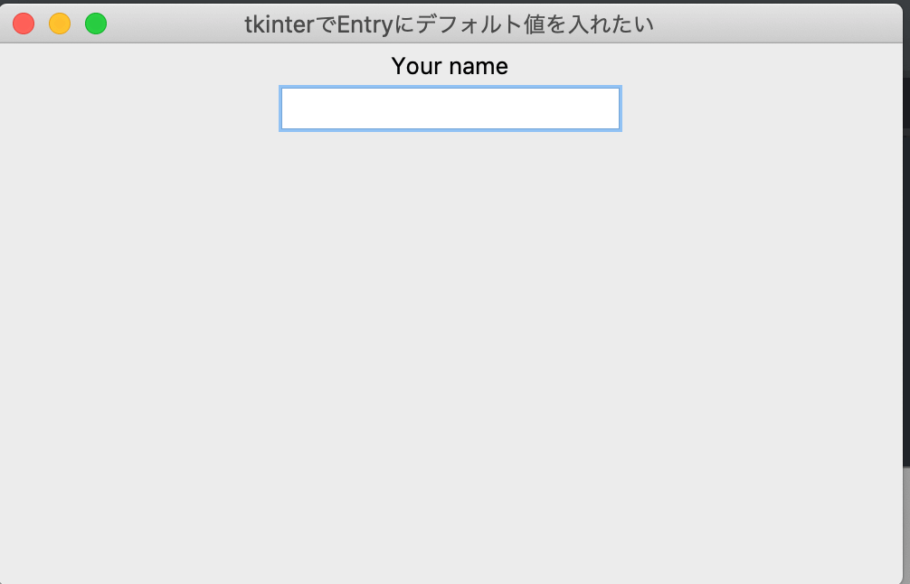
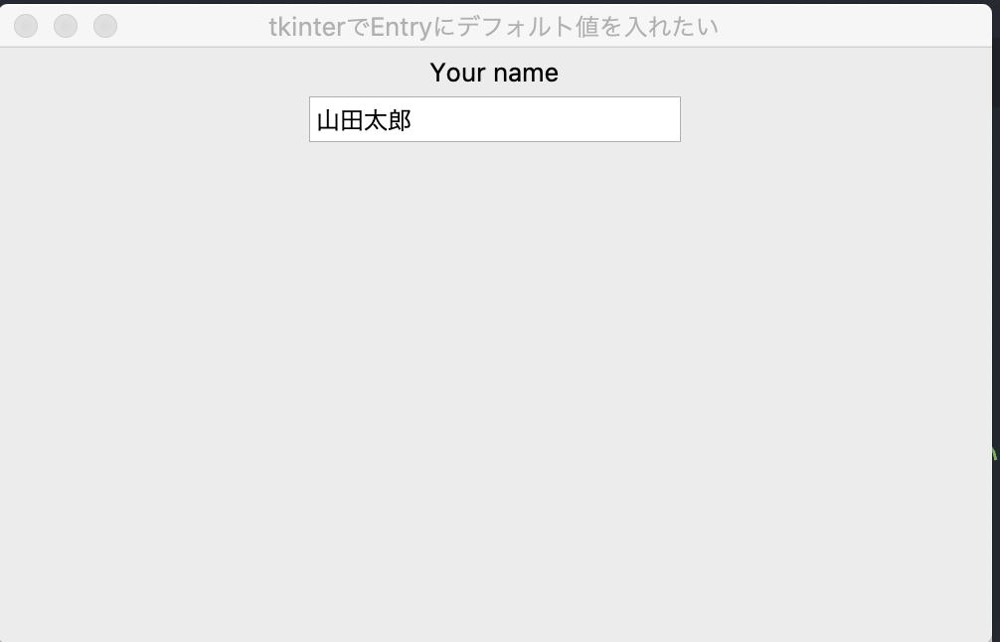

【Python】tkinterでEntryにデフォルト値を入れたい

Pythonからtkinterを使ってGUIを実装していました。Entryを使ってユーザの入力値を受け取ることができますが、デフォルト値の設定の仕方に困ったので、デフォルト値を設定した方法を共有します。
まずはEntryを生成
とりあえずコピペしたら動くようにします。
ちなみに今回の僕の環境は以下になります。同じ環境で動かしたい場合は、以下のライブラリをrequirements.txtにコピペでもして、インストールしてください。
altgraph==0.17
certifi==2020.6.20
macholib==1.14
mysql-connector-python==8.0.21
protobuf==3.13.0
pyinstaller==4.0
pyinstaller-hooks-contrib==2020.9
six==1.15.0
pip install -r requirements.txt
上のやつをターミナルで回せばインストールできると思います。
さて、本題。。。
まずは、Entryを生成します。今回は、entry.pyに書いていきます。
一番大きなくくりのクラスをAppとして、このインスタンスをメインルーティンで立てていきます。
import tkinter as tkclass App(tk.Tk): def __init__(self, *args, **kwargs): # 魔法 tk.Tk.__init__(self, *args, **kwargs)
<span class="comment"># 以下でタイトルとウィンドウサイズを設定</span> self.<span class="function">title</span>(u<span class="strings">"tkinterでEntryにデフォルト値を入れたい"</span>) self.<span class="function">geometry</span>(<span class="strings">"500x300"</span>) <span class="comment"># Frameを生成</span> self.frame = tk.<span class="function">Frame</span>() self.frame.<span class="function">pack</span>() <span class="comment"># Labelを生成</span> label = tk.<span class="function">Label</span>(self.frame, text=<span class="strings">'Your name'</span>) label.<span class="function">pack</span>() <span class="comment"># Entryを生成</span> name = tk.<span class="function">Entry</span>(self.frame) name.<span class="function">pack</s
if __name__ == "__main__": app = App() app.mainloop()
これでとりあえずエントリー(入力受付)が可能になります。ここでUIは一切凝っていないので、下のような状態になると思います。

この入力受付に対して、「山田太郎」をデフォルト値として設定していきたいと思います。
デフォルト値の設定
続いて、「山田太郎」をデフォルト値として設定していきます。基盤は先ほどのコードになります。
先に言うと、tk.Entry().insert()メソッドを用いて、エントリーに対して文字列を挿入します。
それではコードを追加しましょう。
import tkinter as tk
class App(tk.Tk):
def __init__(self, *args, **kwargs):
# 魔法
tk.Tk.__init__(self, *args, **kwargs)
# 以下でタイトルとウィンドウサイズを設定
self.title(u"tkinterでEntryにデフォルト値を入れたい")
self.geometry("500x300")
# Frameを生成
self.frame = tk.Frame()
self.frame.pack()
# Labelを生成
label = tk.Label(self.frame, text='Your name')
label.pack()
# Entryを生成
name = tk.Entry(self.frame)
"""ここにコードを1行追加"""
name.insert(0, "山田太郎")
"""ここにコードを1行追加"""
name.pack()
if __name__ == "__main__":
app = App()
app.mainloop()
概要は上記のようになります。
後半部分に1行足しただけです。足したのはこれ。
name.insert(0, "山田太郎")
第一引数はインデックスを指していて、今回はエントリーの一番初めに挿入したいので、0を入れました。
第二引数は実際に挿入したい値です。よって、今回は「山田太郎」を書きました。
こうすることで結果は以下が得られると思います。

これでデフォルト値の設定ができました。
正攻法なのかは定かではないですが......www
これでデフォルト値の設定ができました。必要な時は是非ご活用を。